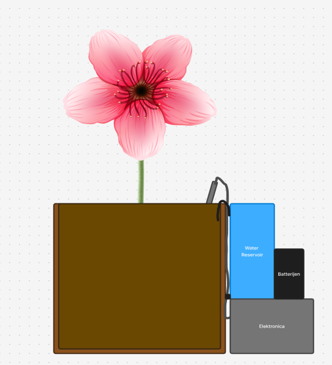
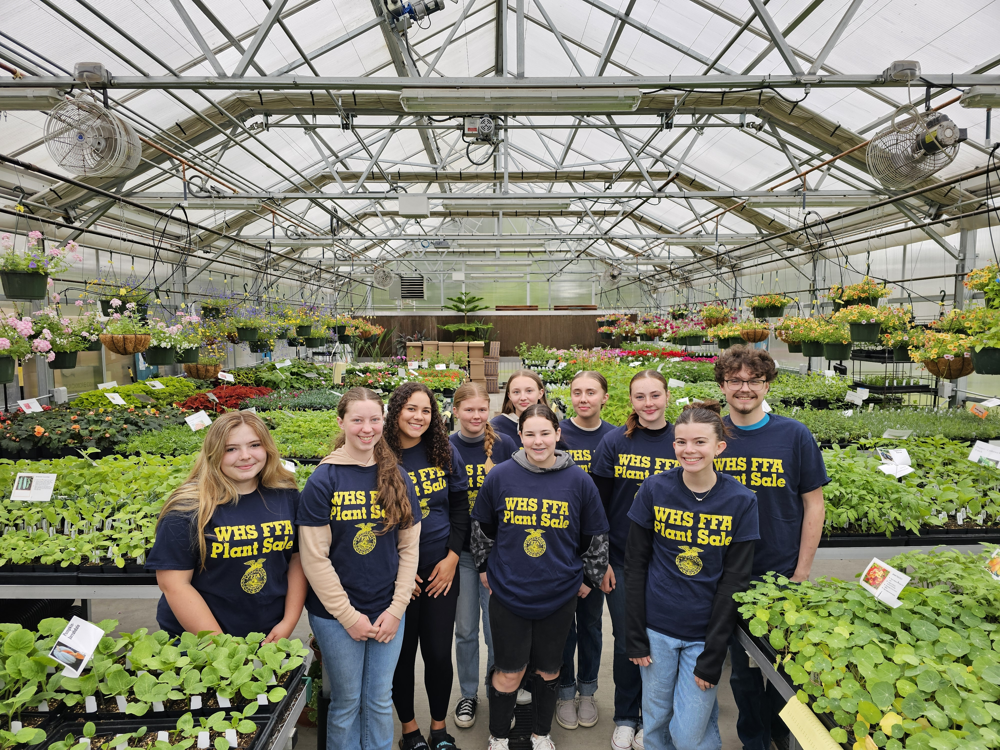

Does your school lack greenery or is it hard to care for plants?
Then Green School's Plant care bot is something your school needs.
It's a smart robot that:


Our target audience are schools that want to make their environment greener and more eco-friendly, but don't have the time, knowledge or resources to take care of their plants. The care of the plants can be a time consuming task for teachers and other schoolpersoneel. Our product plays a role in making this task easier by automating the process. With this schools can enjoy more greenery in their environment without having to worry about the upkeep of their plants.